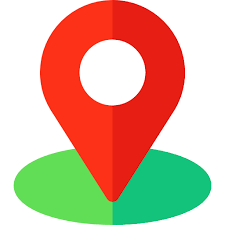

| Home | ABOUT US | TRAVEL DETAILS | CONTACT US |
|---|
Travel is the movement of people between distant geographical locations.
Travel can be done by foot, bicycle, automobile, train, boat, bus, airplane, ship or other means, with or without luggage, and can be one way or round trip.Travel can also include relatively short stays between successive movements, as in the case of tourism.
Reasons for traveling include recreation,holidays, rejuvenation,tourism or vacationing,research travel,the gathering of information, visiting people, volunteer travel for charity, migration to begin life somewhere else, religious pilgrimages and mission trips, business travel, trade, commuting, obtaining health care,waging or fleeing war, for the enjoyment of traveling, or other reasons. Travelers may use human-powered transport such as walking or bicycling; or vehicles, such as public transport, automobiles, trains, ferries, boats, cruise ships and airplanes.
Motives for travel include:
The Specialist Travel Association is a group of unique and specialist travel companies, who collectively provide an unrivalled range of holidays to every corner of the globe. When you book with an member you are assured of the finest personal service, expert knowledge, and a holiday that is fully financially protected. All members are required to provide the highest level of customer satisfaction by concentrating on three main pillars: Choice, Quality and Service – as enshrined in our Quality Charter. We feel it’s thanks to these three qualities that companies consistently dominate consumer-voted travel awards every year. Every company admitted to is financially assessed and bound by own code of business practice which demands clear and accurate descriptions of holidays and the use of customer questionnaires for monitoring standards. Our members are also encouraged to participate in raising awareness among staff, customers and suppliers of the importance of sustainable tourism. So consider your one-stop holiday shop! This website showcases the incredible range of holidays offered by our members to every corner of the globe. Some of them can only be found here on this website and are not freely available on Britain's high streets, while others are offered by selected nationwide retailers called Specialist Travel Agents.
All holidays offered by members are guarenteed to be of a high standard. They take this very seriously and so do we. Our tour operators offer an exciting mix of specialist trips all over the world. They adhere to our quality charter and strive for nothing short of an exceptional experience for their travellers.
Reviews from travellers are at the heart of our association. The impartial feedback provided by our community ensure that our members are adhering to our quality standards.
Offering valuable feedback on our site is straight forward. After you have travelled with one of our members, find them here and click the link on their page to post a review. There's a short form for you to fill out. Travellers typically go beyond the minimum requirement for feedback, as they leave a review on their tour operators’ website and then also share their thoughts. This invaluable feedback is much more than a star rating; our travellers often offer tips, ideas, anecdotes and suggestions for future trip takers, making it a great place to source holiday inspiration. In addition, our two tiered reviews system allows past travellers to rate both their holiday and the tour operator individually. To get started, find the operator you travelled with here.
|  Find us on |
|---|